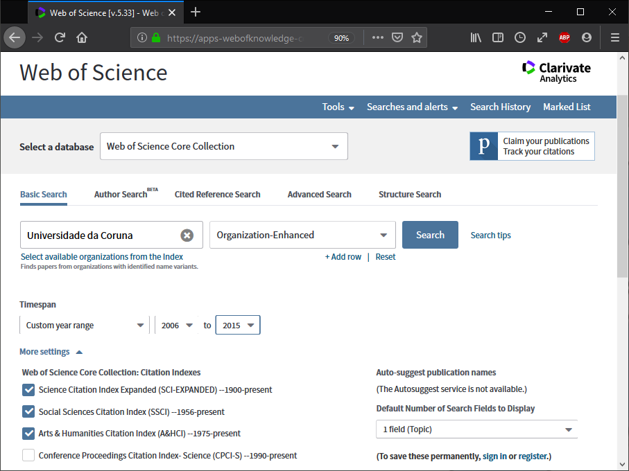
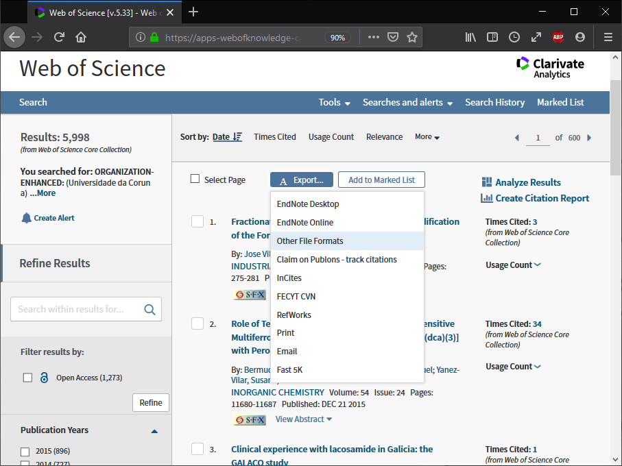
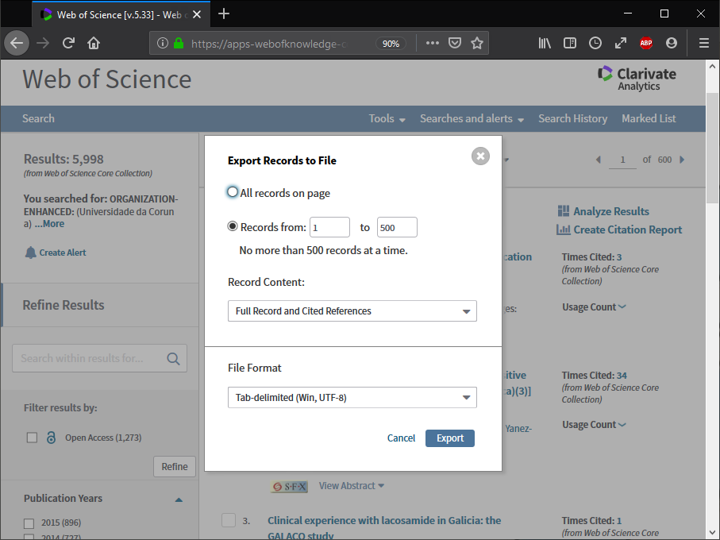

vignettes/docs/WoS_export.Rmd
WoS_export.RmdAcceder a la página web de búsqueda de Clarivate Analytics Web of Science (WoS): http://www.webofknowledge.com, http://wos.fecyt.es.
Seleccionar la base de datos Web of Science Core Collection (Colección principal de WoS) en el desplegable superior, desplegar más ajustes (More settings) y seleccionar únicamente los tres primeros índices de citas (si se sigue el criterio del IUNE):

Establecer los campos de búsqueda (básica o avanzada) y pulsar en Search.
Si se desea descargar la producción científica vinculada a una universidad se puede emplear el campo Organization-Enhaced (OG, Organización-Consolidada). Se puede buscar el nombre específico de la universidad en Select available organizations from the Index, los de las universidades que conforman el Sistema Universitario de Galicia (SUG) son:
UDC: Universidade da Coruna
USC: University of Santiago De Compostela
UVI: University of Vigo
Adicionalmente se puede especificar un rango de años.
Una vez que se obtiene el listado de resultados, seleccionar Export… y Other File Formats (habrá que hacer esto repetidamente si el número de registros es superior a 500, el límite por defecto para la descarga de archivos).

En la ventana emergente establecer el rango de registros (teniendo en cuenta el límite de 500 y que en el último paso habrá que poner el total exacto de registros en el límite superior):

Al pulsar en Export se descargará un archivo de texto (savedrecs.txt por defecto) con los datos de las publicaciones. Sería recomendable irlos guardando en un subdirectorio, renombrando los archivos adecuadamente.